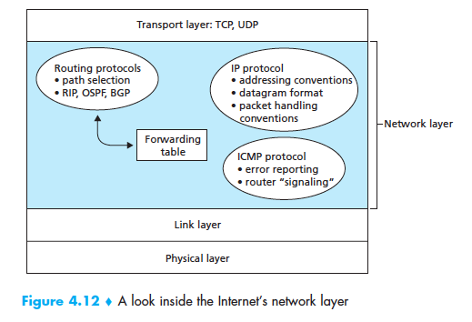
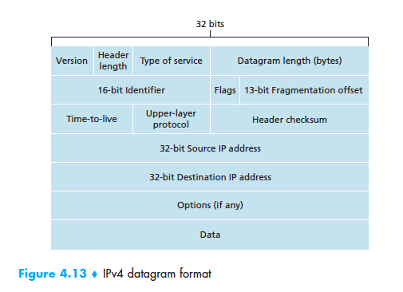

October 14th Notes
IP: Forwarding and Addressing the Internet
- Two versions of the internet: IPv4 which is currently used and IPv6 which is proposed to replace the current version

IPv4 datagram format

- Version Number: 4 bits that specify the IP protocol version of the datagram
- Header Length: 4 bits that determine where in the IP datagram the data begins
- Type of service: Included in the IPv4 header to allow different types of IP datagrams to be distinguished from each other
- Datagram Length: 16 bits long. Used to measure the total length of the datagram in bytes
- Identifier, flags, fragmentation offset: Responsible for IP fragmentation
- Time-to-live: Ensures that datagrams do not circulate in the network forever
- Protocol: This field comes into effect once the datagram reaches its destination. It is used to specify which transport layer protocol to which the data portion of this IP datagram should be passed
- Header checksum: It aids routers detect bit errors in the received IP datagram
- Source and destination IP address: Used to communicate between the source and destination
- Options: Used to extend the IP header to be extended
- Data (payload): the data field of the IP datagram contains the transport-layer segment (TCP or UDP) to be delivered to the destination
IP Datagram Fragmentation
- Maximum Transmission Unit is the maximum amount of data that a link layer frame can carry
- When an IP datagram is split and encapsulated into smaller IP datagrams they are called fragment
IPv4 Addressing
- The boundary between the host and the physical link is called an interface. This term is also used to define the boundary between the router and any one of its links.
- Since every host and router is capable of sending and receiving IP datagrams, IP requires each host and router interface to have its own IP address.
- IP addresses are written in dotted-decimal notation in which each byte of the address is written in its decimal form and is separated by a period (dot) from other bytes in the address
- A subnet is defined as a smaller identifable part of a larger network
- Classless Interdomain Routing (CIDR) is the internet's address assignment strategy and it generalizes the notion of subnet addressing.
- In subnet addressing the 32-bit IP address is divided into two parts and has the dotted-decimal form a.b.c.d/x, where x indivates the number of bits in the first part of the address
- These x bits constitute the network portion of the IP address and are referred to as the prefix
- Before CIDR was adopted, the network portions of an IP address were constrained to be 8, 16, or 24 bits in length, an addressing scheme known as classful addressing
The Dynamic Host Configuration Protocol
- The DHCP allows a host to get a IP address allocated to itself automatically. It can be configured by the network administrator to give the host the same IP address each time or allocate a new temoporary IP address whenever the host connects to the network
- Since the DHCP automates network related aspects of connecting a host into a network, it is referred to as a plug-and-play protocol
- DHCP is a client-server protocol
- The DHCP is a four step process
- DHCP server discovery: The host looks for a DHCP server to interact with using the DHCP discover message
- DHCP server offer(s): The server receiving the message respongs with a DHCP offer message. This offer message contains the proposed IP address for the client, the network mask, and an IP address lease time, the amount of time for which the IP address will be valid
- DHCP request: The host receives the offer message and responds with a DHCP request message echoing the requested parameters
- DHCP ACK: The server responds with a DHCP ACK message confirming the requested parameters
ICMP